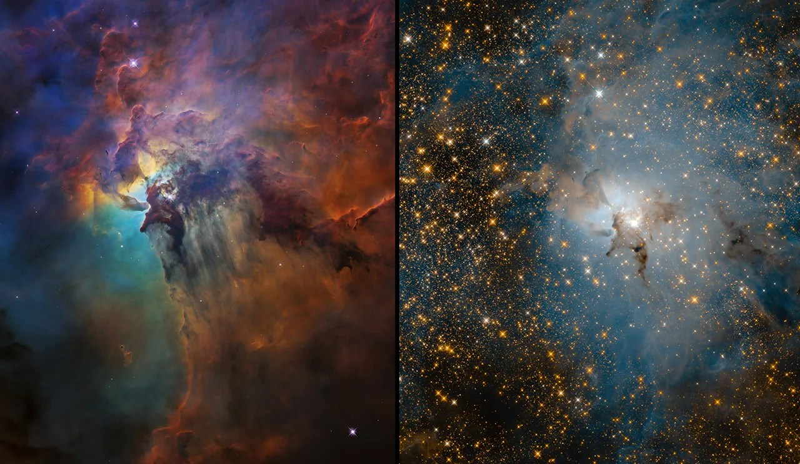
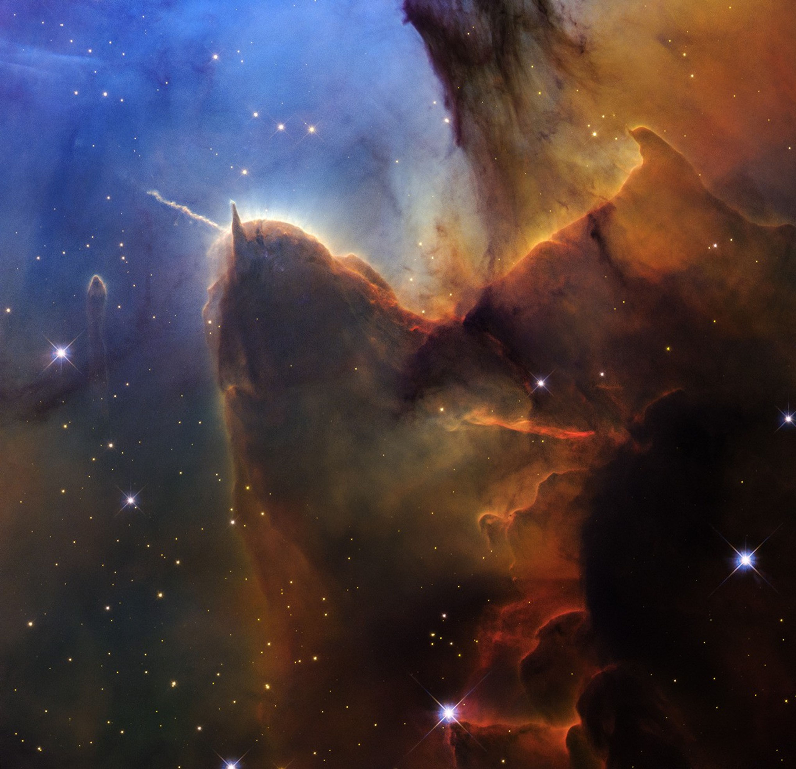
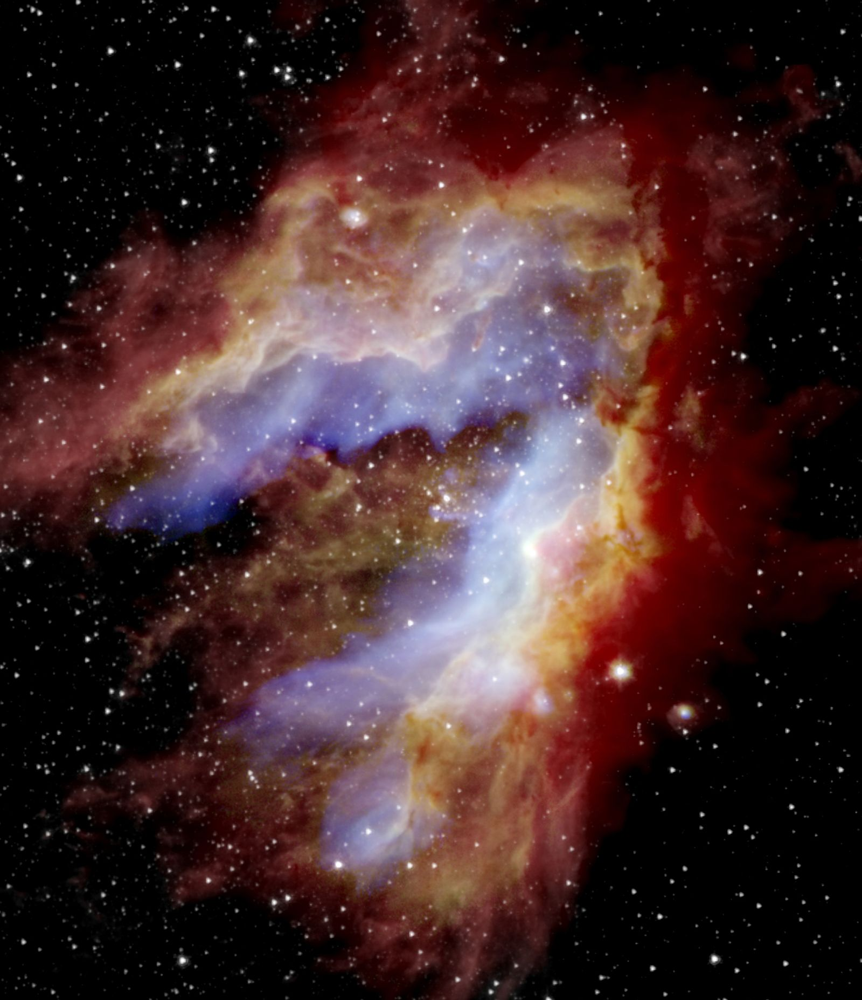
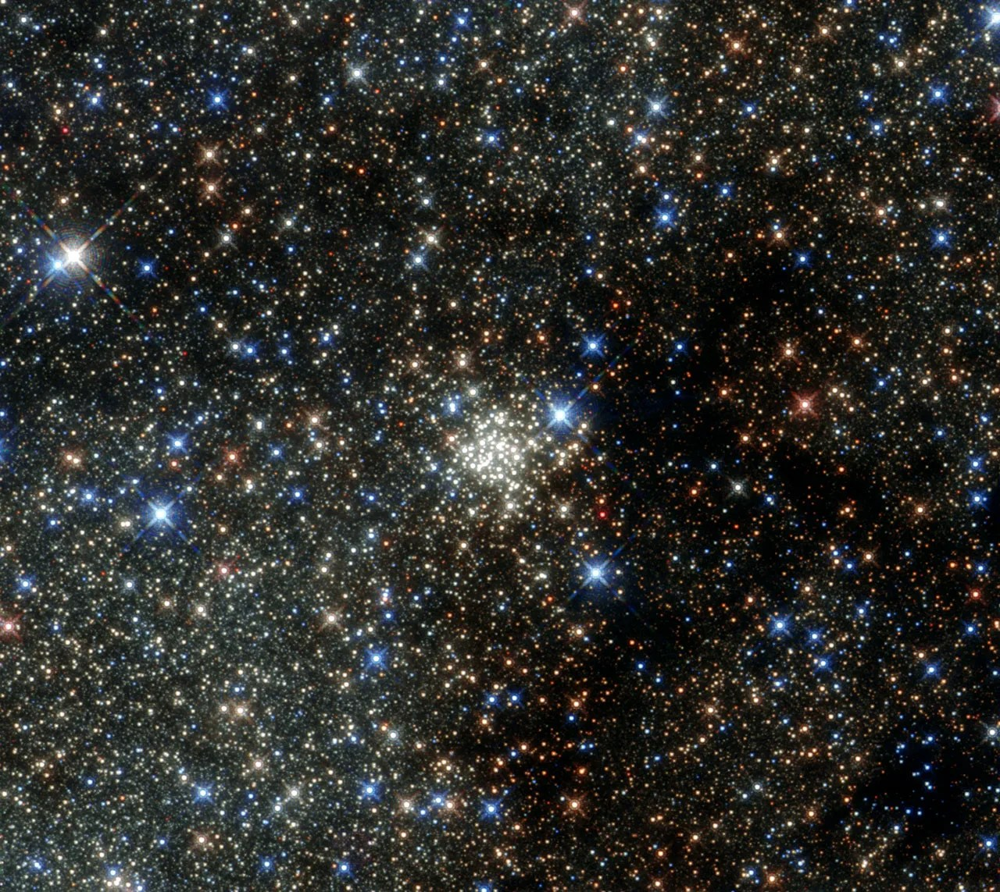
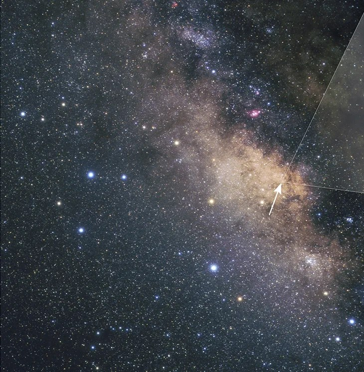
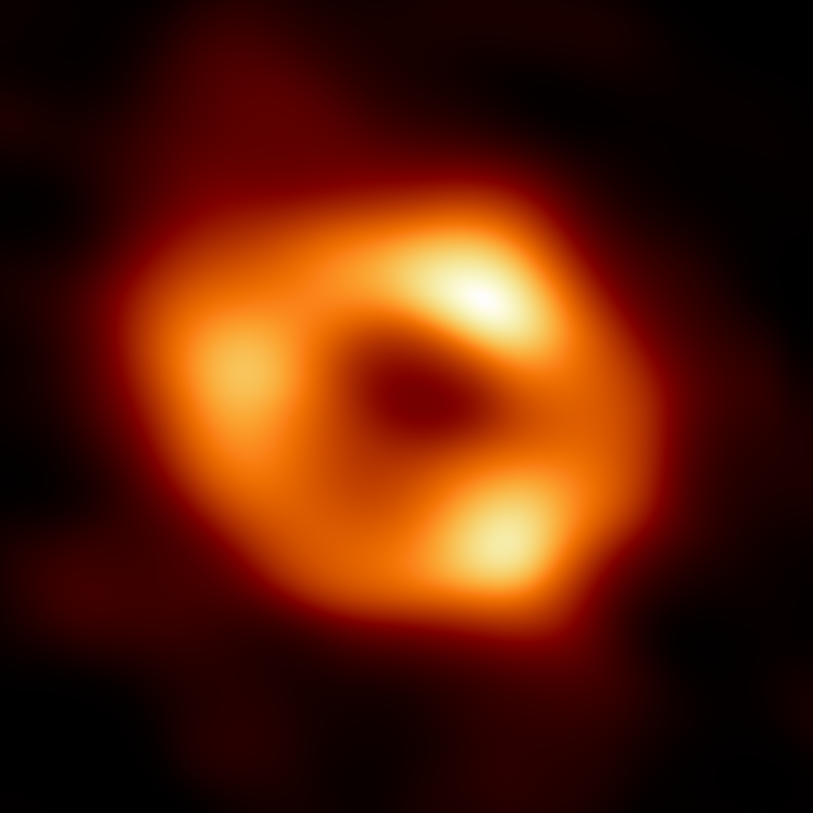

Look, sir… Earth is beautiful, sure… but shall we go a bit further and check out a few more things? I won't charge you much extra.
Very good, sir… I knew the moment I saw you that you weren’t just some ordinary tourist, but someone who genuinely loves to explore and learn. Well then, let's head further out.
Alright, alright… it’s going to be a bit empty until we get a little ways out of the Solar System… I’m not trying to trick you, sir… past stellar explosions cleared out this area a bit… But once we get a little further, there are plenty of things to see, just be a little patient… After a short while, once we pass the Orion-Cygnus Arm of the Milky Way where our tiny Solar System sits, we'll find plenty to look at.
“Based on the ship’s speed and orientation, the current space coordinates cannot be re-entered after 300 seconds. Please confirm the ship’s flight path via the display interface or by voice.”
Sir… see that? We’ve traveled about 4,000 light-years now… and we’ve arrived near the Lagoon Nebula. Doesn’t the color look just like the Lunawa Lagoon back in Sri Lanka? Didn’t I tell you, sir, that once we went a little further there’d be some real good sights? Where else in the world could you go to see something like this? I knew you were someone who could appreciate something this important. Let's keep going.

If we go another 2,000 light-years ahead, you’ll get a prime spot to take some great photos. It’s called the Eagle Nebula. Do you see those three "Pillars of Creation" where thousands of stars are born? The very stars forming inside them are pushing away the surrounding gas and dust clouds, and in about a million years, they'll be completely gone… Good thing you came today, sir, otherwise it might not have been here next time. Did you take your photos? All good? Then let’s move forward.

Sir, up until now we were in a region that looks strangely dark when viewed from Earth. The people who lived in the Andes back in the day used to look at these dark areas in the sky and form constellations out of them, just like with stars. It’s made up of dark regions like the Aquila Rift. We’ll be stepping out of it in a moment, and after that, the stars will show up nice and clear.
Sir… there are two nebulae you don’t get to see every day, but we’d have to take a slight detour off the main path… My rate will be a little higher, but it’s totally worth seeing. What do you think, sir? It won’t cost much, and if I had the chance to see something like this, I'd pay whatever they asked. We're going to see the Trifid Nebula and the Omega Nebula… Alright, alright, it’ll take a little time, sir, just be patient. As we travel, I’ll tell you a bit about them… The Trifid Nebula is like a chaotic mix of all sorts of things: a dust cloud that hasn't taken a definite shape yet, with stars forming on one side making the dust glow red, and on the other side, reflected light glowing blue. The Omega Nebula is the fastest star-making factory in our galaxy. Some people call the Omega Nebula the Swan Nebula, while others call it the Lobster Nebula. I suppose everyone sees it differently. To me, it looks like a wide-open mouth about to swallow a chunk of the universe.


See that? Beautiful, just like I said, right?
We are now in the Norma Arm of the Milky Way. For some reason, this arm is moving away from the galactic center faster than the other arms. Why would anyone want to leave a galaxy as beautiful as this, right?
Sir, in a little while, we’ll be heading into the Milky Way’s inner disk. Before that, what do you say to some nice hospitality and a good cup of tea? One of my cousins runs a small tea shop right around where you get a great view of the Arches Cluster… We could drop in for a moment there, right? He’s a good-hearted kid, he won’t charge you much. Ah, look at you, sir, doubting everything I say… Just have a cup of tea from his shop yourself and tell me whether it's good or not.

“Warning: If the vessel maintains its current orientation and speed, severe gravitational forces may cause irreversible damage to the ship. Please confirm the ship’s flight path via the display interface or by voice.”
Sir, you can probably see the bulge at the center of the Milky Way now; that’s where we’re heading next. Depending on the angle you look at it from, it looks like an X-shape or even a peanut shell. You’ll be able to count millions of stars on our way to our final attraction. Gravitational interactions across the Milky Way’s disk are what formed this bulged shape.

Anyway… now we’ve arrived at the beginning of the final stretch of our journey. The stars around here are like a swarm of flies buzzing around the ogre at the center of the Milky Way, just out of its reach. Some of the stars in this region orbit the galactic center at nearly 3% of the speed of light.
Sir, we’ve come about 26,000 light-years from where we started… right to the center of the Milky Way. Can you see it? …Haha, actually, there’s nothing to see… At the center of our galaxy lies a massive black hole. Its name is Sagittarius A*. Our entire Milky Way rotates around this. You won’t be able to take photos of it, sir, but you can see the glowing accretion disk around the black hole; that’s just matter and light slowly swirling around the monster’s mouth before falling inside… Ah, sir, you never believe a word I say, do you? But I’m telling you the absolute truth, sir.

Sir, now we are right on the edge of the Sagittarius A* black hole. You can see it, right? …Ah, my mistake again. We’re about to enter that pitch-black spot where you can’t see a thing. As we slowly head inside, time is going to feel very strange to you, but don’t worry, that’s just how black holes are. The most important thing is to enjoy the journey without worrying too much about what’s waiting at the end. Let's keep going forward. You know, sir, I’m a family man with kids… you could think about making that tip a bit generous, couldn’t you? Won’t be a big deal for you, but it makes a world of difference for me.
“Severe Warning: Vessel is subject to extreme gravitational pull. Unable to alter current trajectory. Severe Warning: Vessel is subject to extreme gravitational pull. Unable to alter current trajectory. Severe Warning: Vessel is subject to extreme gravity…”
In a house, someone had dropped a marble into the bathroom sink. The marble spun around the circumference of the basin over and over until it finally fell down the drainpipe. Nobody ever saw that marble again.
A long time passed, and the house became empty, slowly falling into ruin. The bathroom sink decayed and crumbled away. What became of the marble that fell inside, nobody ever knew…